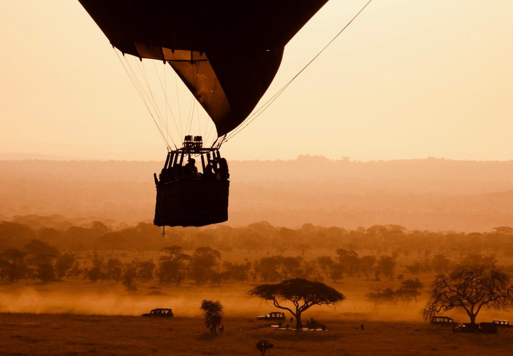

Have you ever wondered what it feels like to float above a world that still moves to the rhythm of the wild? Where the only sounds are the distant calls of lions, the soft rustle of wind, and the occasional burst of flame from a hot air balloon burner? Welcome to the Serengeti Hot Air Balloon Safari an experience that’s equal parts peaceful and pulse-quickening, offering a perspective on wildlife and nature that few ever get to witness. Whether you’re chasing the-great-wildebeest-migration or dreaming of a golden-hued African sunrise, this aerial adventure is your front-row ticket to nature’s grandest show.
Unlike bumpy jeep rides or adrenaline-fueled treks, a hot air balloon safari is a serene, silent, and surreal experience that floats you above the Serengeti’s endless savannahs. The balloon, powered by bursts of flame that heat the air within a large fabric envelope, gently lifts passengers skyward in a wicker basket. You’ll drift with the wind there’s no steering wheel here guided by the invisible patterns of nature.

Ballooning in Africa started gaining traction in the 1970s, when pioneering bush pilots and adventurers saw the potential for aerial wildlife viewing. The Serengeti, with its vast open plains and abundant wildlife, became one of the first places in East Africa to offer hot air balloon safaris. Today, these safaris are a bucket-list experience for travelers from around the world, often considered a highlight of any Tanzanian safari tours.
The Serengeti National Park offers something magical in every season. However, your experience will vary depending on when you visit:
Let’s walk through a typical day:
You’ll be collected from your lodge or camp before sunrise. The crisp morning air and anticipation are the perfect wake-up combination.
As darkness gives way to dawn, you’ll see the balloon slowly inflate a giant breathing creature waking up with the day.
As the sun begins to rise, you’ll ascend gracefully into the sky. The savannah stretches endlessly beneath you, and the world seems to stand still. Below, herds of animals begin their morning migrations, unaware of your silent presence above.
You’ll glide above rivers, kopjes (rocky outcrops), and golden plains. Every moment is different a lion pride here, a tower of giraffes there. The balloon's altitude changes to give you varied perspectives, from treetop to panoramic.
Depending on wind direction, your pilot will select the safest landing site. A soft, controlled descent awaits.
Continuing a tradition dating back to the Montgolfier brothers, you’ll celebrate your flight with a glass of bubbly.
Sit down for a gourmet breakfast set out in the wild, with white tablecloths, fresh coffee, and a full spread all surrounded by the African wilderness.
A Serengeti balloon safari is a premium experience and its price reflects that. Here's what you can expect:
Average Price: $550 – $650 per person
You’ll be away from your camp for several hours, so pack light but smart.
Reputable companies that offer hot air balloon safaris in the Serengeti include:
When choosing, look for:
From royalty to Hollywood royalty, many famous faces have floated above the Serengeti, including:
They all came seeking something different adventure, solitude, connection with nature and found it drifting above Tanzania’s wild heart.
A Serengeti hot air balloon safari isn’t just about ticking off a bucket-list item. It’s about seeing the world from a new perspective. It’s about silence, stillness, wonder and being a humble witness to one of the planet’s last great wildernesses. If you’re planning a Tanzania safari trip to Tanzania and the Serengeti National Park is on your list, make the balloon safari part of your story. Because some views change how you see everything and this is one of them.
Let your journey begin. Book your Serengeti Hot Air Balloon Safari today through a trusted operator, or reach out to Nasikia safaris to build a personalized itinerary that includes this unforgettable adventure.
We love hearing from our guests! Your feedback helps us grow and provide the best experiences possible. If you’ve enjoyed your Tanzania safari, Climbing Kilimanjaro, or Zanzibar Vacation with us, please take a moment to share your thoughts on SafariBookings, Google, and TripAdvisor. Whether it’s a memorable moment, a standout service, or simply a beautiful view, your words inspire future travelers.